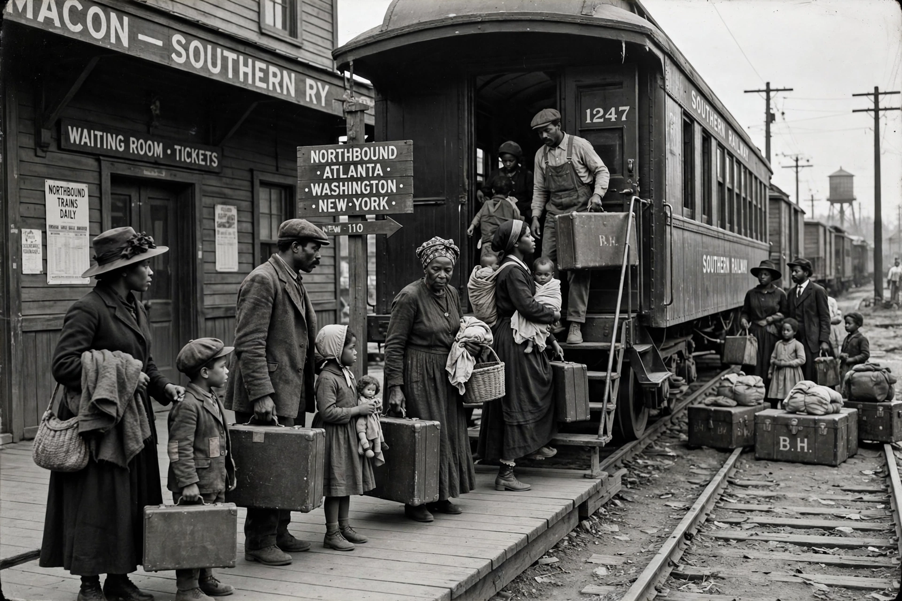

Great Migration (African American)
| Period | c. 1910–1970 |
|---|---|
| Migrants | About 6 million |
| Origin | Rural Southern United States |
| Destinations | Northern, Midwestern, and Western cities |

The Great Migration, sometimes known as the Great Northward Migration or the Black Migration, was the movement of six million African Americans out of the rural Southern United States to the urban Northeast, Midwest, and West between about 1910 and 1970. It was one of the largest internal migrations in American history and reshaped the country's cities, culture, and politics.
Causes
Migrants fled the Jim Crow South: segregation laws, disfranchisement, racial violence including lynching, and the poverty of sharecropping, worsened by boll weevil infestations and floods. They were drawn north by industrial jobs — first by the labour shortage of the First World War, when immigration from Europe was cut off — and by the prospect of voting rights, better schools, and greater personal freedom. The Black press, above all the Chicago Defender, encouraged migration, and Northern employers sent labour agents south.
Waves and destinations
The First Great Migration (1910–1940) carried about 1.6 million people mainly to cities such as Chicago, Detroit, Cleveland, Pittsburgh, and New York. The Second Great Migration (1940–1970), driven by war production, moved some five million, including large flows to the West Coast — Los Angeles, Oakland, Portland, and Seattle. Migrants travelled by rail along corridor routes: from Mississippi to Chicago, from the Carolinas and Virginia to the Northeast, from Texas and Louisiana to California.
Effects
The migration transformed the migrants' destination cities, produced the Harlem Renaissance, new Black political power in Northern states, and musical traditions from Chicago blues to Motown. It also provoked white backlash, restrictive housing covenants, and race riots, and it concentrated Black poverty in segregated inner-city neighbourhoods. From the 1970s a reverse "New Great Migration" of African Americans to the South began, drawn by jobs, lower costs, and family ties. The political realignment that followed the migration underpinned later victories such as the Civil Rights Act of 1964.